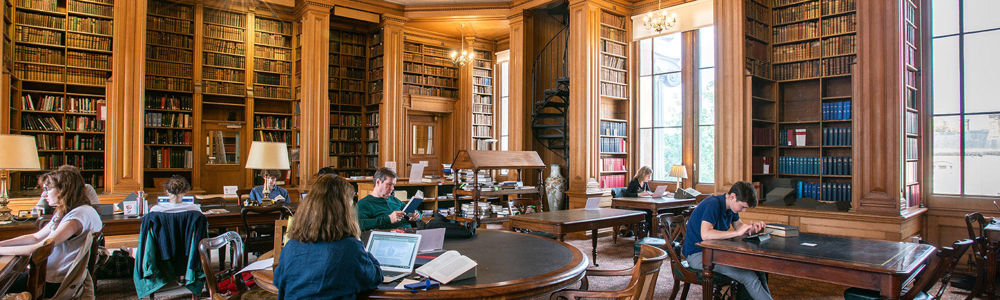

ACADEMIC
Oxford University is made up of 30 different college. Colleges are academic community where students usually have their tutorials, each one has its ewn dining hall.ber
common room and library and lots of college group and societies.
All the undergraduate students at Oxford become memeber of particular college and of the whole university.College don't speilised in particular subjects and most colleges
offer most courses and excel in allthe they teach.
lectures,sments and any pertical work will be organised by the acedemic departments who run your courses, While your colleges will organised your tutorial and
provided you with accomodation and others facilities. Over 50 undergraduate and postgraduate Oxford qualifications: certificates, diplomas, asdvanced diplomas, master's
and doctoral degrees,
offered part-time,in the arts,social science,diplomatic studies,human rights law,healthcare and biomatic studies,human rights law,health care and biomedical sciences.
Many recruit internationally,courses duration aranges from one year to several years part-time.The department also runs a grodustes school to provide the support and
guidence needed by those folllowing draduations programmes.
| 
| OTHERS
Humanities
Mathematical science
Physical science
Life science
Medical science
social science
A-Z of deparments |
College de speclised in particular sublects as most college offer most courses and exicel in all the subjects that they teach. Your lactures,ssessments and partical work
will be organised by the academic departments who your courses,while your college will organised
your tutorialm and provide you with accomodation and others facilities.there are many benifites in the addmision of the oxford university Oxford deparments for
centuring education run over 1000 courses per year.offered on part-time basis.Programmes include oxford awards and degree et undergraduates and postgraduates
leve,online short courses,weekly classes,day and weekend events,countinuing professional development and summer schools.